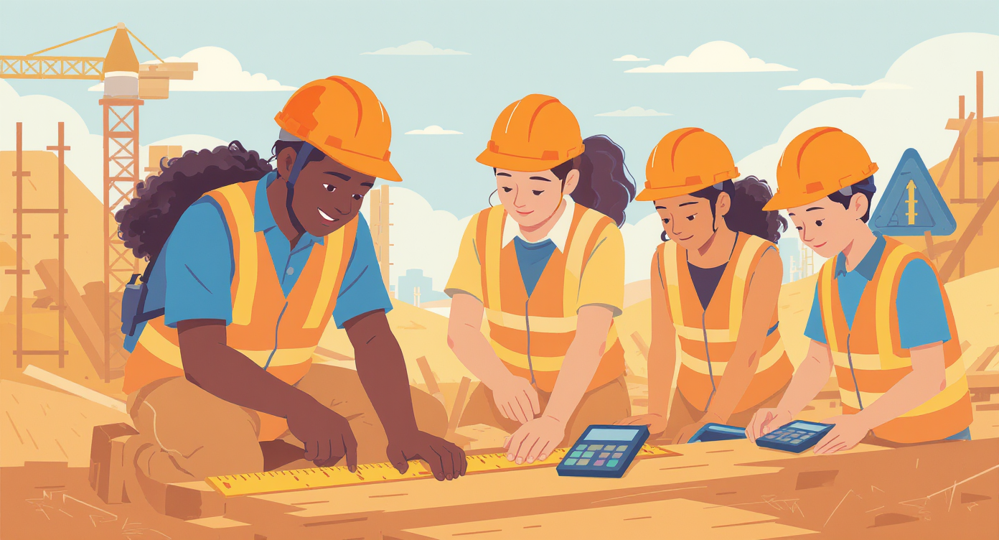

Implementation Roadmap
A strategic 4-phase approach to transforming math education in St. Louis
1
Summer 2026
Focused Pilot Launch
Establishing the foundation with a targeted cohort at HSSU
- Launch 20-30 student cohort (Grades 7-11) at HSSU campus
- Establish 2-3 co-teaching pairs (Math Teachers + Journey Tradespeople)
- Core trade tracks: Construction, Electrical, HVAC
- Validate Workforce Numeracy Aptitude Scale (WNAS) assessment
- Document co-teaching model fidelity protocols
85%
Retention Target
80%
1+ Grade Growth
20-30
Students
$96K
Investment

2
Summer 2027
Strategic Expansion
Scaling success with broader SLPS recruitment and new pathways
- Expand to 60-80 students with broader SLPS recruitment
- Scale to 4-6 co-teaching pairs
- Add Drone Technology track with FAA Trust Awareness
- Integrate Building Futures partnership and site visits
- Pilot dual-enrollment credit transcripting with HSSU
- Launch alumni peer-mentorship program
85%
Growth Target
75%
Micro-Credential
60-80
Students
4
Trade Tracks

3
Summer 2028
Vertical Expansion
Extending the pipeline from elementary through high school
- Scale to 120-160 students across Grades 5-11
- Launch Grades 5-6 "Math Makers" elementary track
- Expand to 8-10 co-teaching pairs
- Integrate into permanent SLPS summer catalog
- Establish partnerships with Plumbing and Welding unions
- Formalize year-round "Math-in-Motion Labs" in 5+ schools
120+
Students
50+
Elementary
5+
Schools
6
Trade Tracks
4
2028-2029 & Beyond
District-Wide Integration
Institutionalizing best practices across all SLPS schools
- Universal summer access for 300-400 students annually
- Professional development for ALL SLPS math teachers
- Codify Math-in-Motion into district curriculum frameworks
- Implement modules in ALL SLPS middle schools
- Permanent SLPS budget line with union partnerships
- Serve 3,000+ students annually through integrated instruction
400
Summer Students
3K+
Year-Round Impact
100%
Middle Schools
∞
Sustainability